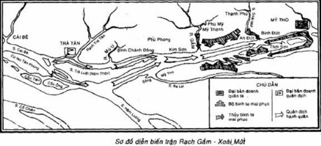

NGÀY 19 THÁNG 1 NĂM 1785*
Nơi đâu ta đã đem quân đến là quân thù đều bị đánh cho thất bại và tan tác. Nơi đâu ta đã mở rộng chiến tranh là quân Xiêm và quân Thanh tàn bạo đều phải quy hàng.
QUANG TRUNG
Hịch gửi quan lại, quân dân hai phủ Quảng Ngãi, Quy Nhơn.
(*) Viết chương này trước khi miền Nam hoàn toàn giải phóng, chúng tôi chưa có điều kiện tiến hành khảo sát và sưu tầm tài liệu có liên quan đến chiến thắng này tại vùng Rạch Gầm - Xoài Mút. Do đó, so với những chương khác của tập sách, chương này có một hạn chế lớn về nguồn tư liệu địa phương mà chúng tôi chưa nghiên cứu được.
Thế kỷ XVIII đã đi vào lịch sử Việt Nam như một thế kỷ nông dân khởi nghĩa, một thế kỷ quật khởi của nhân dân ta. Những biến cố dồn dập diễn ra trong cuộc đấu tranh quyết liệt giữa hai lực lượng xã hội. Một bên là chế độ phong kiến, trong bước đường suy vong tàn tạ, càng ngày càng đi vào con đường phản động, bóp nghẹt mọi tiến bộ xã hội, chà đạp cuộc sống của nhân dân và phản bội lợi ích dân tộc. Bên kia là sự vùng dậy mạnh mẽ của quần chúng nông dân và các tầng lớp dân nghèo quyết giành lấy và bảo vệ cuộc sống, nhân phẩm của con người; là sự vươn lên của cả dân tộc trong cuộc đấu tranh cao cả vì độc lập, tự do của đất nước.
Các cuộc khởi nghĩa nông dân bắt đầu dấy lên từ những năm đầu thế kỷ, rồi lan tràn khắp nơi với khí thế tiến công mãnh liệt chưa từng thấy trong lịch sử. Cuộc chiến tranh nông dân rộng lớn đó đạt đến đỉnh cao nhất với phong trào cách mạng nông dân Tây Sơn (1771-1789). Xuất phát từ một cuộc đấu tranh giai cấp, khởi nghĩa Tây Sơn bùng nổ và phát triển như một cơn bão táp cách mạng rung chuyển trời đất. Trong khoảng 12 năm (từ 1771 - 1783), nghĩa quân đã giáng những đòn đả kích liên tục vào chế độ phong kiến ở Đàng trong, quật ngã nền thống trị xây dựng trên 200 năm của tập đoàn phong kiến họ Nguyễn, giải phóng phần lớn đất Đàng trong.
Trong bước đường cùng, bọn phong kiến phản động ở Đàng trong đứng đầu là Nguyễn Ánh, đã điên cuồng tìm mọi cách chống lại phong trào nông dân Tây Sơn. Nhưng mọi cố gắng của bọn chúng đều bị đập tan, Nguyễn Ánh nhiều lần bị đánh đuổi ra khỏi đất Gia Định (Nam Bộ), phải trốn tránh trên các hải đảo. Cuối năm 1783, Nguyễn Ánh đã phải nhờ một số giáo sĩ Pháp giúp đỡ lương thực đề sống qua những ngày túng thiếu, đói khổ và đầu năm sau (năm 1784) chạy sang cầu cứu vua Xiêm.
Lúc bấy giờ nước Xiêm (từ năm 1945 gọi là Thái Lan) dưới triều vua Cha-kri (Chakkri, sử ta chép là Chất-tri) đang lúc thịnh đạt và đang thi hành chính sách bành trướng mạnh mẽ. Phong kiến Xiêm nuôi tham vọng lớn đối với nước Chân Lạp (ngày nay là Cam-pu-chia) và đất Gia Định của ta: lợi dụng cơ hội này, vua Xiêm là Cha-kri I, dưới danh nghĩa cứu giúp Nguyễn Ánh, âm mưu chiếm đóng nước Chân Lạp và xâm lấn miền đất cực Nam nước ta.
Sau khi nhận lời với Nguyễn ánh, tháng 4 năm 1784, vua Xiêm phái hai tướng Lục Côn và Sa Uyên cùng với Chiêu - Thùy Biện là một cựu thần Chân Lạp thân Xiêm, đem hai đạo bộ binh tiến sang Chân Lạp rồi từ đó, mở một mũi tiến công đánh xuống Gia Định phối hợp với thủy binh sẽ vượt biển đổ bộ lên (Vũ Thế Dinh, Mạc Thị gia phả, sách chữ Hán, chép tay). Ngoài số quân Xiêm, Chiêu - Thùy Biện còn ra sắc chiêu mộ thêm quân lính để thực hiện mưu đồ của vua Xiêm (Francis Ganier, Chronique royale du Cambodge, livre II).
Ngày 25 tháng 7 năm đó, vua Xiêm sai cháu là Chiêu Tăng làm chủ tướng và Chiêu Sương (Chiêu hay Chiếu là phiên âm từ Chao (hay Chạu) trong tiếng Thái, chỉ một chức tước của phong kiến Xiêm lúc đó) làm tướng tiên phong, thống lĩnh 2 vạn quân thủy và 300 chiến thuyền, từ Vọng Các (Băng Cốc) vượt biển đánh chiếm Gia Định. Nguyễn Ánh cũng tập hợp bọn tàn quân giao cho Chu Văn Tiếp chỉ huy với chức Bình Tây đại đô đốc và Mạc Tử Sinh làm tham tướng, dẫn đường cho quân Xiêm. Nguyễn Ánh đã cam tâm bán rẻ quyền lợi dân tộc, dựa vào thế lực nước ngoài để hòng khôi phục nền thống trị của một tập đoàn phong kiến phản động đã bị nhân dân đánh đổ. Hắn đã tạo cơ hội và dẫn đường cho quân Xiêm xâm chiếm đất Gia Định.
Tháng 8, thủy quân Xiêm cùng với quân bản bộ của Nguyễn Ánh đổ bộ lên Kiên Giang, mở đầu cuộc chiến tranh xâm lược miền đất cực nam của nước ta. Sau đó, 3 vạn bộ binh của địch do Sa Uyển và Chiêu - Thùy Biện chỉ huy, từ Chân Lạp tiến xuống phối hợp với thủy binh đánh chiếm Trấn Giang (Cần Thơ) là một vị trí chiến lược quan trọng của miền tây Gia Định. Tổng số quân xâm lược Xiêm lên đến 5 vạn, kể cả quân thủy và quân bộ (Chính sử của triều Nguyễn như Đại Nam thực lục, Đại Nam chính biến liệt truyện và một số tác phẩm đầu đời Nguyễn như Gia Định thành thông chí của Trịnh Hoài Đức đều chép số quân xâm lược Xiêm là 2 vạn. Hầu hết các công trình nghiên cứu trước đây đều trình bày cuộc kháng chiến chống Xiêm theo những tài liệu này, khẳng định số quân Xiêm là 2 vạn. Nhưng đó chỉ là quân số của đạo quân thủy do Chiêu Tăng, Chiêu Sương chỉ huy. Theo Mạc Thị gia phả của Vũ Thế Dinh thì tổng số quân xâm lược Xiêm lên đến 5 vạn và ngoài đạo quân thủy, còn có đạo quân bộ do Sa Uyên và Chiêu - Thùy Biện chi huy từ Chân Lạp tiến xuống. Vũ Thế Dinh giữ chức cai đội dưới quyền của tham tướng Mạc Tử Sinh là người trực tiếp tham gia cuộc chiến tranh lúc đó. Sau khi quân Xiêm thất bại, Nguyễn Ánh lại giao cho Vũ Thế Dinh thu thập tài liệu viết bức “quốc thư” gửi cho vua Xiêm trình bày rõ sự tàn bạo và thất bại của quân Xiêm. Vũ Thế Dinh viết Mạc Thị gia phả vào năm 1818. Do đó, những tài liệu ghi trong cuốn gia phả về số quân Xiêm, về diễn biến của cuộc chiến tranh là có thể tin cậy được. Hơn nữa, đạo quân bộ từ Chân Lạp tiến xuống mà Vũ Thế Dinh ghi chép cũng được đề cập đến trong sử biên niên của Chân Lạp). Đó là chưa tính số quân bản bộ của Nguyễn Ánh. Số quân này lúc lưu vong ở Xiêm không có bao nhiêu, Nhưng sau khi về nước có được tăng cường thêm về số lượng do sự nổi dậy của bọn đại địa chủ phản động ở Gia Định. Xiêm không phải là một nước lớn mạnh, Nhưng về tổ chức và trang bị quân đội nói chung không thua kém các nước ở Đông Nam á. Ngoài các thứ vũ khí sản xuất trong nước, triều đình Xiêm cũng mua thêm một số đại bác của tư bản phương Tây trang bị cho quân đội.
Cuộc kháng chiến của nghĩa quân Tây Sơn chống quân xâm lược Xiêm buổi đầu diễn ra trong tương quan lực lượng hết sức chênh lệch. Bộ chỉ huy tối cao và đại bộ phận quân Tây Sơn lúc bấy giờ đóng ở Quy Nhơn (Bình Định, Gia Lai), để sẵn sàng ứng phó với mọi hoạt động của kẻ thù trong Nam, ngoài Bắc. Số quân Tây Sơn đóng giữ đất Gia Định do phò mã Trương Văn Đa chỉ huy chỉ độ mấy nghìn người. Nhưng đó là một đội quân nông dân dày dạn kinh nghiệm, có tinh thần chiến đấu cao. Năm 1783, trước khi rút quân về Quy Nhơn, Nguyễn Huệ đã lập “nhiều đồn binh vững vàng ở khắp các đường bộ, đường sông, cửa biển” (Legrand de la Liraye, Notes historiques sur la nation Annamite, Saigon, 1895, tr. 95). Và đề ra một kế hoạch phòng thủ Gia Định khá chu đáo.
Trước cuộc tiến công của quân Xiêm, quân Tây Sơn dưới quyền chỉ huy của tướng Trương Văn Đa, vừa chặn đánh quyết liệt ở một số vị trí vừa rút lui từng bước để bảo toàn lực lượng và kiềm chế đến mức tối đa bước tiến của quân thù, đồng thời tiêu hao một phần sinh lực địch. Quân địch tuy có ưu thế hơn hẳn về quân số, nhưng cuộc chiến tranh xâm lượng tiến triển rất chậm. Sau gần 4 tháng, cho đến cuối năm 1784, quân Xiêm chỉ chiếm được Kiên Giang, Trấn Giang (Cần Thơ), Ba Xắc (Sóc Trăng), Trà Ôn, Sa Đéc, Mân Thít (Vĩnh Long), Ba Lai (Bến Tre), Trà Tân (Tiền Giang)... và kiểm soát nửa đất phía tây Gia Định về bên hữu ngạn Tiền Giang (tức ba tỉnh miền Tây: Kiên Giang, An Giang, Vĩnh Long). Quân Tây Sơn vẫn làm chủ miền đất phía đông Gia Định và giữ vững những vị trí quan trọng như Mỹ Tho, Gia Định. Trong một số trận đánh tuy cuối cùng phải rút lui, nhưng quân Tây Sơn đã chiến đấu dũng cảm, gây cho quân địch những tổn thất đáng kể. Trong trận Mân Thít (còn gọi là Mang Thít thuộc tỉnh Vĩnh Long) ngày 30 tháng 11 năm 1784, quân Tây Sơn do Trương Văn Đa trực tiếp chỉ huy, đã giết chết viên tướng cầm đầu quân bản bộ của Nguyễn Ánh là Bình Tây đại đô đốc Chu Văn Tiếp (Theo Gia Định thành thông chí (q. 3) của Trịnh Hoài Đức, trận đánh này xảy ra ngày 18 tháng mười năm Giáp Thìn tức ngày 30-11-1784. Nhưng theo Mạc Thị gia phả của Vũ Thế Dinh thì ngày xảy ra trận đánh đó lại là ngày 10 tháng mười năm Giáp Thìn tức ngày 22-11-1784). Một tướng Xiêm là Thát Xỉ Đa (có tài liệu chép là Chất Xi Đa) cũng bị thương trong trận này. Sau đó, Nguyễn Ánh cử Lê Văn Quân làm Khâm sai tổng nhung chưởng cơ thay Chu Văn Tiếp. Tháng 12 năm 1787, trong trận đánh đồn Ba Lai và Trà Tân, một viên tướng nữa của Nguyễn Ánh là chưởng cơ Đặng Văn Lượng cũng bị giết chết.
Bảo toàn được lực lượng, giữ vững được nửa đất Gia Định, gây cho địch một số thiệt hại, và làm thất bại âm mưu đánh nhanh thắng nhanh của chúng, đó là thắng lợi về mặt quân sự của cuộc rút lui chiến lược do Trương Văn Đa tiến hành. Về mặt chính trị, cuộc rút lui chiến lược có tổ chức của quân Tây Sơn còn có tác dụng khoét sâu những nhược điểm cơ bản của quân địch, làm cho bọn cướp nước và bán nước bị lột mặt nạ trước nhân dân Gia Định và càng ngày càng bị cô lập nghiêm trọng.
Sau khi chiếm được một phần đất Gia Định, quân Xiêm sinh ra kiêu căng, chủ quan. Chúng coi thường quân Tây Sơn, khinh mạn Nguyễn Ánh. Chúng không lo chiến đấu mà chỉ tìm mọi cách cướp bóc của cải của nhân dân để gửi về nước, hãm hiếp phụ nữ, giết hại dân chúng. Bản thân tướng Xiêm là Chiêu Tăng, Chiêu Sương khi đánh Ba Lai đã từng “giết hại nhân dân và cướp bóc vàng bạc, của cải không biết bao nhiêu mà kể” (Mạc Thị gia phả, sách đã dẫn). Bọn tướng giặc còn dung túng quân Xiêm cướp bóc và giết chóc nhân dân” (Mạc Thị gia phả, sách đã dẫn). Vua Xiêm về sau này cũng phải thừa nhận: “Hai tên súc sinh Chiêu Tăng và Chiêu Sương làm việc kiêu căng, hung hãn, vào sâu đất giặc, không tuân lệnh quốc vương (chỉ Nguyễn Ánh - T.G), tàn hại nhân dân nước ấy...” (Mạc Thị gia phả, sách đã dẫn). Theo lời vua Xiêm thì bọn chúng đã dùng chiến thuyền chở về nước rất nhiều con gái, vàng bạc, của cải cướp được ở nước ta.
Hành động bạo ngược của quân giặc đã khơi sâu lòng căm thù sâu sác trong mọi tầng lớp nhân dân yêu nước ở Gia Định. Càng căm ghét quân Xiêm tàn bạo, nhân dân Gia Định càng oán giận bè lũ Nguyễn Ánh rước quân giặc vào giày xéo quê hương, đất nước. Chính Nguyễn Ánh cũng nhận thấy rõ lòng thù oán của nhân dân. Trong bức thư gửi cho một giáo sĩ người Pháp là Li-ô (J. Liot), Nguyễn Ánh dã tỏ ra lo lắng “bọn lính Xiêm chạy theo cái cuồng vọng của chúng: cướp bóc, hãm hiếp đàn bà con gái, vơ vét của cải, giết hại bất kỳ già trẻ. Vì vậy sức mạnh của quân phiến loạn” (chỉ quân Tây Sơn T.G) càng ngày càng tăng lên trong khi quân Xiêm càng ngày càng yếu đi” (Thư Nguyễn Ánh gửi J. Liot ngày 25-1-1785 do Lê Văn Duyệt sao chép và L. Cadière công bố trong Les Francais aux services de Gia Long, Bulletin des amis du vieux Hue, 1926). Sử nhà Nguyễn chỉ ghi lại một số cuộc nổi dậy của bọn phong kiến phản dộng theo Nguyễn Ánh và cố tình che giấu những hành động yêu nước, sự ủng bộ của nhân dân đối với Tây Sơn. Những lời thú nhận trên đây của Nguyễn Ánh chứng tỏ tội ác tày trời của quân giặc và lòng phẫn nộ cao độ của nhân dân. Từ đó nhất định bùng lên ngọn lửa yêu nước, căm thù của nhân dân Gia Định với nhiều hình thức tham gia ủng hộ có hiệu quả đối với quân Tây Sơn. có như vậy, mấy nghìn quân Tây Sơn do Trương Văn Đa chỉ huy mới có thể đương đầu với hơn 5 vạn quân Xiêm - Nguyễn Ánh, làm thất bại chiến lược đánh nhanh thắng nhanh của bọn chúng. Và có như vậy, sức mạnh của quân Tây Sơn mới “Càng ngày càng tăng lên trong khi quân Xiêm càng ngày càng yếu đi” như Nguyễn Ánh phải thừa nhận.
Lực lượng của Nguyễn Ánh không có bao nhiêu, tất cả đều phải dựa vào quân Xiêm. Do những hành động tàn bạo của quân Xiêm và cơn phẫn nộ đang dâng cao của nhân dân, Nguyễn Ánh mất dần tin tưởng vào sự cứu giúp của phong kiến Xiêm và cảm thấy trước nguy cơ thất bại. Vì thế cuối năm 1784, khi giặc Xiêm do hắn rước vào còn đang gieo rắc tang tóc đau thương cho nhân dân ta, thì hắn đã bắt đầu mở đường cho sự can thiệp của tư bản Pháp. Thấy không thề trông nhờ vào quân Xiêm, tháng 11 năm đó, Nguyễn Ánh nhờ Bá Đa Lộc - tên thực dân khoác áo thầy tu - sang cầu viện nước Pháp. Việc làm dó không những một lần nữa tố cáo tính chất phản bội dân tộc của Nguyễn Ánh mà còn chứng tỏ, quân xâm lượng Xiêm đang bị cô lập và bè lũ Nguyễn Ánh đã bị lên án trước nhân dân Gia Định. Mâu thuẫn giữa quân Xiêm - Nguyễn với các tầng lớp nhân dân miền Nam đã trở nên gay gắt. Đồng thời giữa quân Xiêm và quân Nguyễn Ánh cũng phát sinh mâu thuẫn. Đó là điều kiện xã hội và chính trị để phong trào nông dân Tây Sơn phát triển lên thành phong trào dân tộc, đảm đương sứ mạng chống ngoại xâm gìn giữ độc lập dân tộc. Những chuyển biến mới về mâu thuẫn xã hội và tính chất của phong trào Tây Sơn đang tạo ra những điều kiện và thời cơ cho nghĩa quân Tây Sơn được sự đồng tình và ủng hộ mạnh mẽ của nhân dân Gia Định, tiến lên thực hành cuộc phản công chiến lược đập tan mưu đồ của bọn cướp nước và bán nước, giải phóng Gia Định, miền đất cực nam của Tổ quốc.
*
***
Tại căn cứ Quy Nhơn, bộ chỉ huy tối cao của quân Tây Sơn vẫn theo dõi chặt chẽ cuộc kháng chiến ở Gia Định để sẵn sàng tiếp ứng cho Trương Văn Đa khi cần thiết và đặc biệt là chuẩn bị cho cuộc phản công sắp tới.
Cuối năm 1784, một viên tướng Tây Sơn là đô úy Đặng Văn Trấn về Quy Nhơn báo cáo rõ tình hình ở Gia Định (Vũ Thế Dinh, Mạc Thị gia phả, sách đã dẫn. Tài liệu này chỉ chép “đô úy của giặc”, không chép tên. Nhưng theo Gia Định thành thông chí của Trịnh Hoài Đức thì có thể xác định viên đô úy đó là Đặng Văn Trấn. Có tài liệu ghi là Đặng Vân Chân). Trên cơ sở đó, bộ chỉ huy quyết định cử Nguyễn Huệ đem thủy quân vào Nam tổ chức phản công, thực hiện quyết chiến chiến lượng nhằm nhanh chóng quét sạch quân Xiêm - Nguyễn ra khỏi đất Gia Định. Nguyễn Huệ lúc bấy giờ mới 32 tuổi, nhưng từ năm 1776 đã giừ chức phụ chính và năm 1778 được phong làm Long Nhương tướng quân. Đó là một tướng trẻ tài ba, mưu lượng, đã lừng danh trong những trận đánh tiêu diệt quân Nguyễn trước đây. Nay người “Anh hùng áo vải” đó lại được vinh dự đứng ra tổ chức và lãnh đạo cuộc kháng chiến cứu nước.
Nguyễn Huệ dùng thuyền chiến vượt biển vào đến Gia Định khoảng đầu tháng 1 năm 1785. Nguyễn Huệ đóng quân và đặt sở chỉ huy tại Mỹ Tho (Đại Nam thực lục chi chép “Tháng 12, giặc Tây Sơn Nguyễn Văn Nhạc sai Nguyễ Văn Huệ đem binh thuyền vào cứu Sài Gòn” (sách đã dẫn, t. II, tr. 57). Theo Mạc Thị gia phả thì Nguyễn Huệ đem quân vào Gia Định khoảng hon 10 ngày rồi mới đánh trận Rạch Gầm - Xoài Mút vào ngày 9 tháng chạp năm Giáp Thìn. Kết hợp cả hai tài liệu, có thể xác định quân Tây Sơn vào Gia Định khoảng cuối tháng một (từ ngày 12-12-1784 đến ngày 10-1-1785) đầu tháng chạp (từ ngày 11-1 đến 8-2-1785) năm Giáp Thìn, tức vào khoảng đầu tháng 1 năm 1785).
Tổng số quân Tây Sơn ở Gia Định - kể cả quân đồn trú của Trương Văn Đa và đoàn binh thuyền mới được tăng cường của Nguyễn Huệ - lên đến khoảng 2 vạn. Về số lượng, quân Tây Sơn chưa bằng một nửa quân Xiêm, chưa kể quân bản bộ của Nguyễn Ánh (Vũ Thế Dinh trong Mạc Thị gia phả cho rằng riêng thủy quân của Nguyễn Huệ đã 5 vạn. Con số này không phù hợp với lực lượng và tình hình quân Tây Sơn lúc đó. Từ khi khởi nghĩa năm 1771 cho đến cuộc tiếu công ra Bắc năm 1786, chưa có chiến địch nào quân Tây Sơn huy động đến 3 vạn quân. Trong cuộc tiến công lớn ra Quảng Nam đánh tan quân Nguyễn tháng 3 năm 1774, quân Tây Sơn có 26.000 (theo thư của giáo sĩ Diego de Jumina ngày 9-8-1774 trong tập La révolte et la guerre des Tây Sơn, Bulletin de la Sociée des études indochinoises, t. XV, 1940). Trong cuộc tiến công ra Bắc diệt Trịnh năm 1786, quân Tây Sơn cũng chỉ khoảng 2 vạn (Hoàng Lê nhất thống chí). Vũ Thế Dinh là một võ quan tin cẩn của Nguyễn Ánh, lẽ dĩ nhiên tác giả đã thổi phồng quân số Tây Sơn để giảm bớt thất bại nhục nhã của quân Xiêm và Nguyễn Ánh. Chúng tôi phỏng đoán đạo quân thủy của Nguyễn Huệ đưa vào khoảng dưới 2 vạn và kế cả quân của Trương Văn Đa, tất cả khoàng 2 vạn).
Nhưng về trang bị vũ khí, quân Tây Sơn không thua kém quân Xiêm. Lúc bấy giờ, cuộc khởi nghĩa Tây Sơn đã trải qua trên 13 năm đấu tranh (1771-1783). Lúc mới khởi sự, nghĩa quân chỉ là những người nông dân nghèo khổ tập hợp lại, tự trang bị bằng những phương tiện và vũ khí có sẵn trong tay. Người thì và gậy gộc, cuốc thuổng, người thì mang gươm giáo, cung nỏ; chỉ có một số rất ít có súng tay (loại súng kíp tự chế). Nhưng trong quá trình phát triển của phong trào nông dân, lực lượng nghĩa binh đã trưởng thành về mọi mặt và trở thành một quân đội nông dân. Khi bước vào cuộc kháng chiến chống Xiêm, quân đội Tây Sơn, ngoài bộ binh còn có tượng binh, kỵ binh và một đội thủy binh mạnh với nhiều loại thuyền chiến lớn nhỏ khác nhau. Trang bị của quân Tây Sơn cũng được nâng cao nhiều, đặc biệt là có nhiều đại bác các cỡ. Đó là những đại bác của quân Nguyễn bị quân Tây Sơn chiếm được trong các trận đánh, bao gồm dại bác do quân Nguyễn chế tạo và những đại bác do chính quyền họ Nguyễn mua của các công ty tư bản phương Tây. Chỉ riêng trận đánh ra Quảng Nam giữa năm 1774 quân Tây Sơn đã chiếm được 45 voi chiến, 82 khẩu đại bác Hà Lan, Anh và 6 thuyền chở đầy đạn được (Thư của giáo sĩ Diego de Jumina ngày 9-8-1774, La révolte ét la guerre des Tây Sơn, tài liệu đã dẫn). Trên thuyền chiến, quân Tây Sơn thường đặt nhiều đại bác.
Còn về tinh thần chiến đấu thì dĩ nhiên, quân Tây Sơn có ưu thế tuyệt đối hơn hẳn quân Xiêm - Nguyễn. Đó là tinh thần quật cường bất khuất của giai cấp nông dân kết hợp với lòng yêu nước và truyền thống anh hùng của dân tộc Khi tiến vào Gia Đính làm nhiệm vụ cứu nước, quân Tây Sơn không những có sự tham gia ủng hộ mạnh mẽ của nông dân và các tầng lớp bị áp bức mà còn lôi cuốn được sự đồng tình, hưởng ứng của mọi thành phần yêu nước. Trừ bọn phong kiến phản động đã phản bội dân tộc, đại đa số nhân dân Gia Định đều đứng về phía Tây Sơn, kiên quyết chống lại bọn cướp nước và bán nước. Ngọn cờ chiến đấu của quân Tây Sơn lúc bấy giờ đã trở thảnh ngọn cờ yêu nước và chính nghĩa có sức mạnh cổ vũ, đoàn kết mọi tầng lớp nhân dân.
Trước khi Nguyễn Huệ đem quân vào Gia Định, quân Xiêm - Nguyễn đã kiểm soát được vùng Hậu Giang và tiến tới vùng Tiền Giang. Chúng đã chiếm được Sa Đéc, Long Hồ (Vĩnh Long), Mân Thít, Ba Lai, từ hữu ngạn Tiền Giang cho đến sông Ba Lai. Cuối năm 1784, chúng chiếm được Trà Tân ở phía bắc Tiền Giang và sông Mỹ Tho (Đại Nam thực lục chép là Trà Tân (bản dịch đã dẫn, t. II, tr. 56), Gia Định thành thông chí (q. 3) chép là Trà Luật, Mạc Thị gia phả lại chép là Tà Luật, có tài liệu ghi là Trà Lọt). Sau khi chia quân đóng giữ một số vị trí trọng yếu trong vùng đã chiếm được, Chiêu Tăng, Chiêu Sương cùng với Nguyễn Ánh đang tập trung quân về Trà Tân (Tiền Giang). Chúng dự tính sẽ từ Trà Tân tiến lên Mỹ Tho, Gia Định, đánh tan quân Tây Sơn, hoàn thành việc xâm chiếm toàn bộ đất Gia Định. Để chuẩn bị cho cuộc tiến công đầy tham vọng đó Nguyễn Ánh đã phái cai đội Nguyễn Văn Thành đi Bát Chiên và Quang Hóa thu thập tàn quân Đông Sơn là đội quân do Đỗ Thanh Nhân lập ra trước đây để chống lại quân Tây Sơn. Như vậy là quân Nguyễn Ánh đã lén lút hoạt động ở vùng sông Vàm Cỏ Đông, Vàm Cỏ Tây, khoảng giữa Mỹ Tho và Gia Định nhằm chia cắt và uy hiếp quân Tây Sơn từ mặt sau để phối hợp với cuộc tiến công từ Trà Tân lên.
Giữa lúc quân địch dang chuẩn bị cho cuộc tiến công đánh chiếm Mỹ Tho, Gia Định, thì bất ngờ thủy quân Tây Sơn do Nguyễn Huệ chỉ huy kéo và đóng ở Mỹ Tho. Quân địch phải tạm thời hoãn cuộc tiến công đề lo dối phó với Nguyễn Huệ, đề phòng quân Tây Sơn từ Mỹ Tho đánh lên.
Tại Trà Tân và vùng nam bờ sông Mỹ Tho, Tiền Giang, quân địch đã tập trung một khối lượng khá lớn gồm đại bộ phận quân Xiêm và quân bản bộ của Nguyễn Ánh. Chiêu Tăng, Chiêu Sương và Nguyễn Ánh đặt sở chỉ huy và đóng đại quân tại Trà Tân (Mạc Thị gia phả chép rõ: Chiêu Tăng, Chiêu Sương và Nguyễn Ánh đóng đại quân ở Tà Luật (tức Trà Luật trong Gia Định thành thông chí, hay Trà Tân trong Đại Nam thực lục chính biên). Nguyễn Ánh “đóng đồn ở trên bờ sông”, và quân Xiêm “lên cả trên bờ cố thủ, chiến thuyền đỗ dọc theo bờ sông làm thế ỷ dốc” (Mạc Thị gia phả, sách đã dẫn). Trà Tân ở phía bắc sông Mỹ Tho, khoảng giữa Cái Bè và Bình Chánh đông. Địa hình và vị trí vùng này khá lợi hại. Dòng sông bị chia cắt bởi những cù lao lớn như Cù lao Tân Phong, cù lao Trà Luật (hay cù lao Năm Thôn) và nhiều cồn cát, bãi sa bồi. Các nhánh sông chi chít nhưng hẹp. Địa thế đó rất thuận lợi cho việc bố trí phòng thủ, phối hợp chặt chẽ giữa bộ binh và thủy binh. Vùng Trà Tân ở vào đầu sông Mỹ Tho tiếp với Tiền Giang và gần chỗ phân lưu của các sông Cổ Chiên, Hàm Luông, Ba Lai đổ ra biển. Khi tiến công, quân địch có thể từ Trà Tân theo dòng sông Mỹ Tho tiến đánh Mỹ Tho.
Phía nam Tiền Giang và sông Mỹ Tho, quân địch phân chia một bộ phận đóng giữ những vị trí quan trọng như Sa Đéc, Long Hồ (Vĩnh Long), vừa để bảo vệ sở chỉ huy, ngăn chặn quân Tây Sơn có thề từ biển theo các cửa sông Ba Lai, Hàm Luông, Cổ Chiên đánh lên, sẵn sàng tiếp ứng cho đại quân ở Trà Tân.
Tiến công vào Trà Tân, một căn cứ tập trung đông quân địch và phòng bị chặt chẽ như vậy, quân Tây Sơn sẽ gặp nhiều khó khăn, bất lợi, nhất là khi quân ta ít hơn hẳn quân địch về số lượng. Hơn nữa trong tình hình cả nước lúc đó, tiền đồ phát triển của phong trào Tây Sơn đòi hỏi Nguyễn Huệ phải đánh nhanh giải quyết nhanh. Kẻ thù nguy hiểm của Tây Sơn không phải chỉ có quân xâm lượng Xiêm và bọn phong kiến phản động Nguyễn Ánh ở Gia Định mà còn cồ quân Trịnh ở Thuận Hóa. Tiến công vào căn cứ Trà Tân, cuộc chiến đấu chắc chắn sẽ ác liệt và kéo dài. Như vậy, quân chủ lực tinh nhuệ của Tân Sơn bị giam chân ở mặt Nam, do đó ở mặt Bắc, quân Trịnh có thể lợi dụng thời cơ đánh vào Quy Nhơn. Quân Tây Sơn sẽ bị phân tán lực lượng, phải đồng thời đối phó với hai kẻ thù ở hai phía. Đó là những lý do quân sự và chính trị giải thích vì sao Nguyễn Huệ không mở cuộc tiến công vào Trà Tân. Nguyễn Huệ chủ trương nhử địch ra khỏi căn cứ. kéo chúng đến một địa hình có lợi cho ta tiêu diệt gọn bằng một trận quyết chiến theo lối đánh vận động trên sông.
Những ngày đầu, Nguyễn Huệ sử dụng một binh lực nhỏ mở những trận tập kích vào một số vị trí đóng quân của địch. Mỹ Tho cách Trà Tân gần 30 ki-lô-mét. Sông Mỹ Tho cũng như các dòng sông gần biển chịu sự chi phối của thủy triều, hàng ngày nước sông lên xuống theo thủy triều. Do đó, hàng ngày lợi dụng nước thủy triều lên, Nguyễn Huệ cho những đội binh thuyền nhỏ xuất phát từ Mỹ Tho đánh lên Trà Tân hoặc theo những cửa sông Ba Lai, Hàm Luông, Cổ Chiên đánh lên những vị trí của địch xung quanh Trà Tân rồi lại rút lui (Vũ Thế Dinh, Mạc Thị gia phả, sách đã dẫn. Thư của giám mục Bá Đa Lộc gửi giám đốc chủng viện ngày 20-3-178, Lettes édifiantes ét curieuses, Missions de L'Indochine, t. IV). Đó là những trận tập kích nhằm nghi binh thăm dò lực lượng địch và kích động thêm tinh thần chủ quan, khinh địch của quân Xiêm. Đó chính là những trận đánh mà sử quán triều Nguyễn đã xuyên tạc tính chất và mục đích, cho rằng “Huệ đến, đánh vài trận không được, muốn đem quân về”.
Mặt khác, Nguyễn Huệ còn biết rõ dã tâm của vua Xiêm là lợi dụng danh nghĩa cứu giúp Nguyễn Ánh để xâm lấn đất Gia Định và bọn tướng tá, quân lính Xiêm thì lợi dụng cuộc viễn chinh dể cướp bóc của cải. Bọn chúng thấy vàng bạc, châu báu thì hoa mắt lên, có thể quên cả chiến đấu Cuối năm 1784, Nguyễn Ánh đã than phiền với Bá Đa Lộc về “tình trạng hai lòng của người Xiêm” (Vũ Thế Dinh, Mạc Thị gia phả, sách đã dẫn. Thư của giám mục Bá Đa Lộc gửi giám đốc chủng viện ngày 20-3-178, Lettes édifiantes ét curieuses, Missions de L'Indochine, t. IV). Để khoét sâu thêm nhược điểm cơ bản của quân địch và tìm cách ly gián, tăng thêm sự hoài nghi giữa Nguyên Ánh với quân Xiêm, Nguyễn Huệ dùng một tù binh người Chân Lạp làm sứ giả mang nhiều vàng bạc, gấm vóc đến gặp chủ tướng của quân Xiêm xin giảng hòa với điều kiện như sau “Tân triều (chỉ Tây Sơn) và cựu triều (chỉ Nguyễn Ánh - T.G) nước tôi tranh nhau lãnh thổ và nhân dân, không thể cùng đứng với nhau được. Nước tôi cùng nước Xiêm cách trở xa xôi, trâu và ngựa không đánh hơi nhau được, chẳng hay vương tử (chỉ Chiêu Tăng là cháu vua Xiêm - T.G.) đến chốn này làm gì. Chi bằng hai nước chúng ta hòa hiếu với nhau. Sau khi xong việc, nước tôi sẽ y lệ tiến cống. Như thế có phải là được lợi lâu dài không? Vậy việc cựu chúa (chỉ Nguyễn Ánh) nước tôi để mặc chúng tôi lo liệu, xin vương tử đừng có giúp đỡ” (Vũ Thế Dinh, Mạc Thị gia phả, sách đã dẫn. Thư của giám mục Bá Đa Lộc gửi giám đốc chủng viện ngày 20-3-1785, Lettes édirantes ét curieuses, Mission de L'Iindochine, t. IV). Chiêu Tăng vừa nhận lễ vật để thỏa lòng tham không đáy, vừa âm mưu giả vờ giảng hòa để rồi bất ngờ tiến công quân Tây Sơn. Hắn tưởng thế là cao tay, mưu trí, là “tương kế tựu kế”. Chủ tướng quân Xiêm đang thỏa mãn với những “thắng lợi” đã đạt được và tin tưởng vào những dự tính lớn mai sau, có ngờ đâu đang bị Nguyễn Huệ từng bước, từng bước một dẫn dắt vào cạm bẫy.
Nhân việc giảng hòa, Nguyễn Huệ “hàng ngày, sai người mời quân Xiêm sang chơi thuyền để khoe các chiến cụ hùng tráng đầy đủ; khi quân Xiêm về, lại tặng vóc lụa” (Vũ Thế Dinh, Mạc Thị gia phả, sách đã dẫn). Nguyễn Huệ biết rằng: “Quân Xiêm chỉ tham của, ta lấy lợi mà nhử thì thế nào cũng được việc” (Vũ Thế Dinh, Mạc Thị gia phả, sách đã dẫn). Đó là một hình thức tiến công địch mà Nguyễn Huệ đã áp dụng nhằm đánh vào bản chất tham lam của quân địch, góp phần làm suy yếu tinh thần chiến đấu và làm rã rời hàng ngũ của chúng. Việc giảng hòa riêng với Chiêu Tăng còn có tác dụng gây thêm mối hoài nghi của Nguyễn Ánh đối với quân Xiêm. Trước thái độ ngờ vực của Nguyễn Ánh, Chiêu Tăng có lần đã phải giãi bày, thề thốt: “Tôi phục mệnh vua nước tôi đem quân vượt biển sang giúp quốc vương, nay chưa phân thắng bại mà tôi tham của cải thì có khác gì loài thú cắn lại chủ nhà. Nếu vì lợi mà phải thất trận, làm nhục quốc thể, thì tôi trốn sao khỏi tội trời diệt. Xin quốc vương chớ nghi ngờ” (Vũ Thế Dinh, Mạc Thị gia phả, sách đã dẫn).
Hơn mười ngày đã trôi qua kể từ khi Nguyễn Huệ đem quân vào Mỹ Tho. Quân Xiêm lúc đầu lo phòng thủ để sẵn sàng chống lại một cuộc phản công lớn của quân Tây Sơn. Nhưng rồi chúng thấy quân Tây Sơn chỉ mở những cuộc tập kích nhỏ và Nguyễn Huệ lại điều đình xin giảng hòa. Tại Mỹ Tho, chúng thấy quân Tây Sơn “lui lại, đem thuyền ra dần ở sông lớn để đợi xem biến chuyển ra sao” (Vũ Thế Dinh, Mạc Thị gia phả, sách đã dẫn). Những hành động của quân Tây Sơn càng làm cho Chiêu Tăng tin rằng Nguyễn Huệ không dám tiến công và đang chờ đợi kết quả giảng hòa. Hắn hí hửng bàn với Nguyễn Ánh: “Giặc rất tin tôi, rất không phòng bị, ta nên thừa thế mà đánh phá giặc ngay. Xin hẹn đến đêm mùng 9 tháng này (tháng chạp năm Giáp Thìn), quốc vương đem ngự binh đi trước xông vào thuyền giặc. Tôi cùng các tướng bản bộ đem tất cả chìến thuyền lớn nhỏ tiến lên phá các thuyền chắn ngang sông của giặc thì thế nào cũng toàn thắng” (Vũ Thế Dinh, Mạc Thị gia phả, sách đã dẫn). Chiêu Tăng đẩy quân bản bộ của Nguyễn Ánh đi trước mở đường. Còn hắn sử dụng toàn bộ chiến thuyền, theo sông Mỹ Tho, mở cuộc tiến công lớn vào sở chỉ huy của Nguyễn Huệ, hòng bất ngờ đánh tan quân Tây Sơn.
Tại sở chỉ huy đóng ở Mỹ Tho, Nguyễn Huệ bám sát mọi hành động của quân Xiêm - Nguyễn. Nguyễn Huệ biết chắc rằng quân địch sớm muộn thế nào cũng đánh lên Mỹ Tho. Những cuộc tập kích nhỏ, việc điều đình giảng hòa, những hành động nghi binh tỏ ra lơ là phòng bị, đều nhằm mục đích thúc đẩy quân địch sớm rời khỏi căn cứ, mở cuộc tiến công mà ông mong đợi, đồng thời làm cho quân địch thêm chủ quan, tự mãn, tạo ra nhân tố bất ngờ cho trận quyết chiến. Kế hoạch nhử địch ra khỏi căn cứ để tiêu diệt bằng một trận đánh vận động trên sông của Nguyễn Huệ đã thành công. Bọn tướng lĩnh Xiêm, như sử nhà Nguyễn chép “cậy mình thắng luôn, bèn dẫn quân đến thẳng Mỹ Tho” (Đại Nam thực lục chính biên, bản địch đã dẫn, t. II, tr. 57). Trong lúc đó, Nguyễn Huệ đã dày công nghiên cứu địa hình từ Trà Tân đến Mỹ Tho và quyết định chọn khúc sông Mỹ Tho từ Rạch Gầm đến Xoài Mút làm trận địa quyết chiến với quân thù.
*
***
Đất Mỹ Tho khi mới khai phá gọi là đạo Trường Đồn. Năm 1779, chính quyền họ Nguyễn đổi đạo Trường Đồn thành dinh Trường Đồn gồm 1 huyện (huyện Kiến Khang) và 3 tổng. Trước cuộc kháng chiến chống Xiêm, năm 1782, dinh Trường Đồn lại đổi làm dinh Trấn Định, trị sở đặt ở chợ Mỹ Tho, thôn Mỹ Chánh (thị xã Mỹ Tho). Sau này, nhà Nguyễn đổi dinh Trấn Định làm trấn Định Tường (năm 1808, gồm 1 phủ, 3 huyện, 6 tổng), rồi tỉnh Định Tường (năm 1832), bao gồm các tỉnh Tiền Giang và Đồng Tháp ngày nay.
Đầu thế kỷ XIX, nhận xét về địa hình vùng đất này, Trịnh Hoài Đức, tác giả Gia Định thành thông chí đã viết: “Trấn này đất đai phì nhiêu, đường thủy và đường bộ, giao thông đều tiện lợi... Rừng núi hiểm trở, sông ngòi lưu thông” (Trịnh Hoài Đức, Gia Định thành thông chí, sách đã dẫn, q. 3).
Sông Mỹ Tho là một dòng sông lớn, phía trên tiếp nước Tiền Giang rồi đổ ra biển qua cửa Đại, cửa Tiểu và các nhánh sông Ba Lai, Hàm Luông. Đặc biệt, sông Mỹ Tho chảy qua phía trước Trà Tân và Mỹ Tho (trấn Lỵ) là hai vị trí đóng quân và cũng là hai đại bản doanh của quân Xiêm - Nguyễn và quân Tây Sơn. Quân địch từ Trà Tân đánh lên Mỹ Tho phải hành quân theo đường sông Mỹ Tho.
Đoạn sông Mỹ Tho từ Rạch Gầm đến sông Xoài Mút dài chừng 7 ki-lô-mét. Lòng sông ở đây lại mở rộng hơn 1 ki-lô-mét, có chỗ đến trên dưới 2 ki-lô-mét. Với đoạn sông dài và rộng lớn như vậy, quân Tây Sơn có thể dồn hàng trăm thuyền chiến của địch lại mà tiêu diệt.
Hai bên bờ sông Mỹ Tho ở quãng này có một số thôn xóm, nhưng lúc bấy giờ còn thưa thớt, cây cỏ còn rậm rạp. Hai loại cỏ mọc nhiều ở vùng này là cỏ lác và cỏ tranh. Ven sông gần mặt nước là một dải rừng cây bần khá um tùm. Trịnh Hoài Đức cho biết cây bần, tên Hán - Việt là thủy mai, là loại cây “lá và hoa như cây mai nhưng không có gai, quả tròn to bằng ngón chân... thân cây cong queo” (Trịnh Hoài Đức, Gia Định thành thông chí, sách đã dẫn, q. 5). Hạt quả bần có chất dầu xanh dùng để chữa vết thương hay thắp đèn (tác giả đã nhầm với cây mù u – rongcoithit). Thân cây bần cong queo nên thường dùng làm tay cầm bánh lái thuyền. Vì vậy, cây bần không những mọc tự nhiên mà còn được người ta trồng nhiều. Những bãi cỏ lác, cỏ tranh và rừng bần ven sông là những chỗ giấu quân và mai phục thuận lợi của bộ binh Tây Sơn.
Phía bắc sông Mỹ Tho ở quãng này có hai nhánh sông đổ vào là Rạch Gầm và Xoài Mút. Rạch Gầm (hay Sầm Giang) bắt nguồn từ Giồng Trôm (hay đồi Lữ) chảy về phía nam, hợp với sông Trà Liễu (hay sông Lâu Lâm) đổ ra sông Mỹ Tho (Sử quán triều Nguyễn, Đại Nam nhất thống chí, bản địch đã dẫn, t. V, tr. 97). Sông Xoài Mút còn có tên là sông An Đức (Trịnh Hoài Đức, Gia Định thành thông chí, sách đã dẫn, q. 3) vì dòng sông này đổ ra sông Mỹ Tho ở thôn An Đức thuộc tổng Kiến Thuận. Nhân dân địa phương thường gọi là sông Xoài Mút hay Xoài Hột vì trước đây hai bên bờ sông, nhất là bên hữu ngạn có một rừng xoài. Đây là loại xoài hoang, mọc tự nhiên nên quả nhỏ, hột to, mu mỏng, người ta quen gọi là “xoài hột” (vì hột to) hay xoài mút" (vì mu mỏng nên khi ăn phải mút) và nhân đó đặt tên dòng sông chảy qua là sông Xoài Mút hay Xoài Hột.
Rạch Gầm và Xoài Mút là hai con sông nhỏ, thường gọi là rạch, nhưng giừ vị trí quan trọng trong thế trận của Nguyễn Huệ. Thủy binh Tây Sơn bố trí ở hai rạch này sẽ là hai mũi tiến công lợi hại chặn đẩu và khóa đuôi toàn bộ đội hình quân địch một khi chúng đã lọt vào trận địa mai phục.
Khoảng giữa Rạch Gầm và Xoài Mút, dòng sông Mỹ Tho có cù lao Thới Sơn. Đây là một bãi đất bãi, chu vi dài 5 dặm khoảng 6 ki-lô-mét) nằm hơi chếch về phía nam sông Mỹ Tho, đối diện với cửa sông Xoài Mút. Tiếp theo cù lao Thới Sơn về phía nam là cù lao Hổ hay bãi Tôn (Sử quán triều Nguyễn, Đại Nam nhất thống chí, sách đã dẫn, t. V, tr. 101; Trịnh Hoài Đức, Gia Định thành thông chí, sách đã dẫn, q. 2). Bộ binh Tây Sơn bố trí trên những cù lao đó có thể dùng đại bác bắn vào sườn đội hình quân địch và sẵn sàng tiêu diệt những tên địch liều lĩnh đổ bộ lên đề tìm đường tháo chạy. Những nhánh sông nằm giữa các cù lao và bờ nam là những nơi mai phục và xuất phát của đội thuyền chiến Tây Sơn lao ra chia cắt đoàn thuyền của địch thành từng mảng để tiêu diệt.
Chọn đoạn sông Mỹ Tho từ Rạch Gầm đến Xoài Mút làm trận địa quyết chiến, chứng tỏ nghệ thuật lợi dụng địa hình hết sức tinh Tường của Nguyễn Huệ. Dòng sông rộng cùng với các nhánh sông, cù lao, bờ sông ở đây đáp ứng đầy đủ yêu cầu bố trí một thế trận tiến công vận động lớn cho phép quân Tây Sơn bao vây chặt rồi chia cắt, tiêu diệt toàn bộ quân địch.
Đoạn sông Mỹ Tho từ Rạch Gầm đến Xoài Mút cách Mỹ Tho khoảng 6 ki-lô-mét (tính từ cửa sông Xoài Mút) và cách Trà Tân khoảng 15 ki-lô-mét (tính từ cửa Rạch Gầm). Quân Tây Sơn từ Mỹ Tho có thể nhanh chóng đến chiếm lĩnh trận địa và giừ bí mật không cho quân địch ở Trà Tân dò biết. Trên cơ sở phán đoán đúng ý đồ của địch và với những nguồn tin do thám tin cậy, Nguyễn Huệ không những nắm được âm mưu tiến công của địch mà còn biết cả kế hoạch và thời gian tiến công nữa. Do đó, Nguyễn Huệ có thể chủ động xác định không gian và thời gian của trận quyết chiến, bày sẵn thế trận để đợi giặc.
Quân địch định tối ngày mồng 9 tháng chạp (tức ngày 19 tháng 1 năm 1785), sẽ rời khỏi Trà Tân, bắt đầu cuộc hành quân tiến đánh Mỹ Tho. Công việc bố trí trận địa của quân Tây Sơn phải hoàn thành trước giờ tiến công của địch.
Nguyễn Huệ huy động đại bộ phận binh lực gồm cả bộ binh và thủy binh, bí mật vận động đến bày trận tại khu vực tác chiến đã được lựa chọn và nghiên cứu trước. Bộ binh với hỏa lực đại bác mạnh, bố trí mai phục trên bờ sông và trên cù lao Thới Sơn. Nhiệm vụ của bộ binh là phát huy sức mạnh hỏa lực bắn vào đội hình thuyền chiến của địch khi đã lọt hẳn vào trận địa mai phục và sau đó sẵn sàng giáp chiến tiêu diệt tàn quân địch bỏ chạy lên bờ. Hai đội thủy binh tinh nhuệ giấu quân trọng Rạch Gầm - Xoài Mút hình thành hai mũi tiến công chặn đầu, khóa đuôi vây chặt quân địch trong trận địa quyết chiến. Một bộ phận thủy binh mai phục trong các nhánh sông, lạch sông, ẩn nấp sau các cù lao, sẽ bất ngờ đánh tạt ngang vào đoàn chiến thuyền địch như những lưỡi dao sắc băm nát đội hình của chúng (Theo Mạc Thị gia phả. sách đã dẫn). Theo Đại Nam thực lục chính biên (đệ nhất kỷ) thì bấy giờ Nguyễn Huệ được một hàng tướng là Lê Xuân Giác báo cáo cụ thể tình hình của quân Xiêm - Nguyễn (Tư liệu về khởi nghĩa Tây Sơn, Sở Văn hoá – Thông tin tỉnh Bình Định xuất bản, 1993, tập 11, tr. 226).
Một bộ phận thủy binh Tây Sơn vẫn đóng ở Mỹ Tho, bày thuyền chiến trên sông để nghi binh đánh lừa quân địch Nhưng khi quân địch đã lọt vào trận địa Rạch Gầm - Xoài Mút thì bộ phận thủy binh này lập tức ngược dòng sông Mỹ Tho đến tiếp ứng cho trận quyết chiến chiến lược, tăng cường sức mạnh cho quân ta vào giờ phút quyết định của cuộc chiến đấu.
Tối ngày 18 rạng ngày 19 tháng 1 năm 1785, quân Tây Sơn dưới quyền chỉ huy của Nguyễn Huệ, đã sẵn sàng trong tư thế quyết chiến với một thế trận bao vây, tiêu diệt quân địch rất chặt chẽ, lợi hại.

*
***
Sau khi đã bàn bạc phối hợp với nhau và chuẩn bị các mặt, tối ngày 18 tháng 1 năm 1785 (ngày 8 tháng chạp năm Giáp Thìn), quân Xiêm - Nguyễn bắt đầu rời khỏi khu căn cứ Trà Tân, “tiến thẳng đến Mỹ Tho” (Sử quán triều Nguyễn, Đại Nam thực lục, sách đã dẫn, t. 5, tr. 70). Chiêu Tăng, Chiêu Sương huy động tất cả chiến thuyền lớn nhỏ, toàn bộ lực lượng thủy binh và một bộ phận bộ binh vào cuộc tiến công này. Một bộ phận bộ binh còn lại do Sa Uyển chỉ huy vẫn đóng ở Đông Khẩn (Sa Đéc) để bảo vệ vùng đất chúng đã kiểm soát được thuộc hữu ngạn Tiền Giang. Chiêu Tăng trực tiếp chỉ huy cuộc tiến công.
Quân bản bộ của Nguyễn Ánh do tổng nhung chưởng cơ Lê Văn Quân chỉ huy cũng tham gia cuộc tiến công dưới quyền điều khiển chung của chủ soái quân Xiêm là Chiêu Tăng. Số quân của Nguyễn Ánh lúc bấy giờ có khoảng ba, bốn nghìn, bị Chiêu Tăng đẩy đi trước mở đường. Nguyễn Ánh tham dự cuộc hành quân với tinh thần lo lắng, hoài nghi và tâm lý thất bại. Hắn cố đi sau với một số bầy tôi thân cận như hộ bộ Trần Phúc Giai, cai cơ Nguyên Văn Bình, thái giám Lê Văn Duyệt để phòng khi lâm nguy còn kịp tháo chạy. Thận trọng hơn nữa, hắn còn phái tham tướng Mạc Tử Sinh về ngay Trấn Giang để khi “xảy ra việc bất trắc thì đã sẵn có đường chạy trốn” (Vũ Thế Dinh, Mạc Thị gia phả, sách đã dẫn). Mạc Tử Sinh chuẩn bị sẵn thuyền bè ở Long Hồ (Vĩnh Long) để đón Nguyễn Ánh chạy trốn khi cuộc tiến công thất bại.
Khoảng đầu canh năm ngày 19 tháng 1 năm 1785, đoàn thuyền chiến của địch lọt vào trận địa mai phục của quân Tây Sơn ở Rạch Gầm - Xoài Mút (Mạc Thị gia phả chép trận đánh bắt đầu xảy ra vào đêm mồng 9 tháng chạp, đầu canh năm. Bức thư của Nguyễn Ánh gửi giáo sĩ J. Liot đề ngày 15 tháng chạp năm Cảnh Hưng 45 (25-1-1785) lại nói “ngày mồng 8 tháng chạp (18-1-1785) chúng tôi vừa bị thua trận” (L. Cadière, Les Francais aux services de Gia Long, Bulletin des amis du vieux Huế, 1926). Như vậy là hai tài liệu gốc ghi chép hai ngày khác nhau (ngày 8 và 9 tháng chạp âm lịch), dẫn đến sự chỉ định ba thời điểm khác nhau cho chiến thắng Rạch Gầm - Xoài Mút (ngày 8, 9 và 10 tháng chạp âm lịch tức ngày 18, 19 và 20 tháng 1 năm 1785). Trong bài này, chúng tôi xác định trận đánh bắt đầu tối ngày 8 rạng ngày 9 tháng chạp Giáp Thìn, tức tối ngày 18 rạng ngày 19-l-1785, vào khoảng đầu canh năm tức khoảng 4 giờ sáng 19-1-1785. Chính vì thời điểm có tính chất giao thời giữa hai ngày như vậy nên, với một quan niệm thời gian không chính xác, có thể coi là thuộc tối ngày hôm trước hay mờ sáng ngày hôm sau. Cách ghi chép trong Mạc Thị gia phả và bức thư của Nguyễn Ánh, thiếu chính xác nhưng không mâu thuẫn).
Từ Trà Tân, chiến thuyền của địch theo sông Trà Luật (một nhánh Tiền Giang chạy theo bờ phía bắc cù lao Trà Luật tức cù lao Năm Thôn) và Tiền Giang ra sông Mỹ Tho. Từ đây dòng sông mở rộng và quang đãng, đoàn thuyền địch trên 300 chiếc lớn nhỏ (Gồm 300 thuyền chiến quân Xiêm và một số thuyền chiến của quân Nguyễn), xếp thành đội hình tiến nhanh về phía Mỹ Tho. Khi đoàn thuyền đã vào hết trong khúc sông được chọn làm trận địa quyết chiến, nghĩa là tiền quân địch đã đến cửa sông Xoài Mút và hậu quân đã qua cửa Rạch Gầm, Nguyễn Huệ ra lệnh công kích.
Mở đầu trận đánh, hai đội thủy binh Tây Sơn từ Rạch Gầm, Xoài Mút bất ngờ lao ra, chặn đánh hai đầu, dồn quân địch vào vòng vây đã bố trí sẵn. Đồng thời, đại bác của quân Tây Sơn từ hai bên bờ sông và trên cù lao Thới Sơn bắn xối xả vào khúc giữa đoàn thuyền địch lúc bây giờ đang bị ùn lại.
Mạc Tử Sinh lúc đó ở Long Hồ (Vĩnh Long) cũng nghe tiếng súng đại bác nổ liên hồi và dữ dội. Lúc đầu, viên tham tướng được Nguyễn Ánh giao cho nhiệm vụ chuẩn bị đường chạy trốn, tưởng là đại bác của quân Xiêm - Nguyễn đang tiến công thuyền chiến Tây Sơn. Nhưng chỉ một lát sau, hắn đã thấy một viên võ quan và nhiều binh lính bị thương vì trúng đạn chạy về Long Hồ (Vũ Thế Dinh, Mạc Thị gia phả, sách đã dẫn). Hắn lo lắng thăm hỏi tin tức Nguyễn Ánh để kịp tháo chạy.
Bị chặn đầu, khóa đuôi và bị hỏa lực quân Tây Sơn áp đảo từ đầu quân địch hết sức hốt hoảng và đội hình bị rối loạn. Ngay sau đó, những đội thuyền chiến của quân Tây Sơn từ các vị trí mai phục xông thẳng vào đội hình đang rối loạn của địch, chia nhỏ đoàn thuyền chúng ra từng mảng mà tiêu diệt. Chiến thuyền quân Tây Sơn từ Mỹ Tho cũng kịp thời đến tiếp ứng. Quân Tây Sơn, thủy bộ phối hợp với nhau, khép chặt vòng vây, tiêu diệt quân địch hết mảng này đến mảng khác. Dưới sự chỉ huy và đốc chiến của Nguyễn Huệ, quân Tây Sơn lao vào cuộc chiến đấu quyết định với một tinh thần rất dũng cảm và tác phong rất mãnh liệt. Một viên tướng quân Nguyễn thoát chết chạy về Long Hồ kể cho Mạc Tử Sinh biết: “Nguyễn Huệ đốc chiến ở phía sau, ra lệnh liều chết đánh, quân sĩ nào không quyết chiến thì chém ngay để làm răng. Vì thế các tướng sĩ đều liều, không nghĩ gì đến tính mệnh... tiến công rất là mãnh liệt” (Vũ Thế Dinh, Mạc Thị gia phả, sách đã dẫn).Quân địch bị hãm vào một tình thế hiểm nghèo: bị bao vây, bị chia cắt, đội hình tan vỡ, quân lính khiếp sợ lúc đầu đôi nơi quân địch còn tồ chức chống cự, phóng hỏa đốt cháy thuyền chiến Tây Sơn. Nhưng những hành động kháng cự đó nhanh chóng bị đập tan trước sức tiến công ào ạt của quân Tây Sơn.
Hàng loạt thuyền chiến của địch lần lượt bị đánh đắm vì trúng đạn đại bác hoặc vì quân Tây Sơn xông lên tiêu diệt. Vô số quân địch bị giết chết tại trận: kẻ bị trúng đạn, trúng tên; kẻ thì bị gươm giáo đâm chém hay bị chết đuối giữa sông nước. Một số quân địch cố bơi vào bờ để tìm đường tháo chạy. Nhưng ở đấy, những đơn vị bộ binh Tây Sơn đã được bố trí sẵn để chờ chúng.
Trận đánh kết thúc rất nhanh, gọn và đạt kết quả hết sức to lớn, oanh liệt.
Toàn bộ thuyền chiến địch trên 300 chiếc đều bị đánh đắm và phá hủy. Quân Xiêm bị “thua to, bỏ chạy” (Sử quán triều Nguyễn, Đại Nam thực lục, bản dịch đã dẫn, t. 5, tr. 57), bị “chết gần hết” (Trịnh Hoài Đức, Gia Định thành thông chí, sách đã dẫn, q. 3). Chiêu Tăng, Chiêu Sương cùng với một số tàn quân trốn được lên bờ bắc sông Mỹ Tho. Chúng phải liều chết đánh phá để mở đường tháo chạy lên Quang Hóa rồi qua đất Chân Lạp về Xiêm. Số tàn quân sống sót chạy theo Chiêu Tăng, Chiêu Sương có khoảng vài nghìn người (Trịnh Hoài Đức, Gia Định thành thông chí, sách đã dẫn, q. 3; Sử quán triều Nguyễn, Đại Nam thực lục, bản dịch đã dẫn, t. II, tr. 57; Đại Nam chính biên liệt truyện sơ tập, q. 30, tr. 11). Đến tháng 3 năm 1785, bọn này mới về tới Vọng Các. Một bộ phận tàn quân địch bị thua trận ở phía sau, có lẽ thuộc hậu quân, bỏ chạy tán loạn ra các ngả. Chúng cướp được một số thuyền nhỏ của dân, theo đường thủy vượt biền về nước.
Ngày 4 tháng 2 năm 1785 (25 tháng chạp Giáp Thìn), vua Xiêm nhận được tin bại trận, vội phái phi-nhã Xuân đem 10 thiếc thuyền đi cứu bọn tàn quân chạy trốn bằng đường biển. Khi gặp bọn này, chúng trả lời phi-nhã Xuân: “Chiêu Tăng đại bại, đã theo đường bộ Cao Miên chạy trốn để thoát nạn. Chúng tôi bị thua ở phía sau không biết đường bộ thập tử thất sinh thế lào, may cướp được một số thuyền của dân, chạy trốn về đây” (Vũ Thế Dinh, Mạc Thị gia phả, sách đã dẫn. Phi-nhã hay pha-nha là từ Thái, chỉ một chức tước của phong kiến Xiêm thời đó). Phi-nhã Xuân thu thập số tàn quân đó đem về nước.
Riêng lực lượng bộ binh Xiêm do Sa Uyển chỉ huy đóng ở đạo Đông Khẩu (Sa Đéc) thì không thấy một tài liệu nào nói đến. Nhưng dĩ nhiên là khi đại quân đã bị thất bại thảm hại ở Rạch Gầm - Xoài Mút thì quân Xiêm đóng ở Đông Khẩu cũng như một số vị trí khác, cũng tan rã và lo tìm đường tháo chạy.
Khi các nhóm tàn quân Xiêm chạy tán loạn theo các ngả đã dần dần tụ tập lại, Chiêu Tăng kiểm quân số thì thấy: “Lúc xuất quân, quân thủy, bộ tất cả gồm 5 vạn quân nay chỉ còn hơn 1 vạn” (Vũ Thế Dinh, Mạc Thị gia phà, sách đã dẫn). Như vậy số quân dịch bị tiêu diệt là gần 4 vạn quân trong tổng số 5 vạn quân Xiêm. Tỷ lệ tiêu diệt địch trong trận Rạch Gầm - Xoài Mút, chỉ tính riêng quân Xiêm, đã tới gần 4 phần 5.
Còn quân bản bộ của Nguyễn Ánh thì, bộ sử chính thức của triều Nguyễn, bộ Đại Nam thực lục chính biên cũng đã ghi chép: “Lê Văn Quân và các quân cũng đều tan vỡ bỏ chạy”. Đại bộ phận quân Nguyễn bị tiêu diệt. Viên cai cơ chỉ huy quân thủy là Nguyễn Văn Oai bị chết tại trận. Viên tướng tiền quân là Dũng hầu (chưa rõ tên) theo gót Chiêu Tăng trốn sang Chân Lạp. Chủ tướng quân Nguyễn là Lê Văn Quân thì quân lính tan tác mỗi người một ngả, phải vừa trốn tránh vừa thu nhặt tàn quân, đến giữa năm sau (tháng 6 năm 1786) mới đem được 600 quân sang Xiêm gặp Nguyễn Ánh. Những viên tướng khác như Nguyễn Văn Thành, Tôn Thất Huy, Tôn Thất Hội... mỗi người cũng chỉ còn được dăm chục tàn quân.
Riêng Nguyễn Ánh đã chuẩn bị cho cuộc chạy trốn trước khi bắt đầu cuộc tiến công của quân Xiêm - Nguyễn. Vừa thấy “thế giặc mãnh liệt, không thể chống nổi” (Vũ Thế Dinh, Mạc Thị gia phả, sách đã dẫn) hắn đã vội vã bỏ mặc quân lính, rút chạy về phía sau. Hắn cùng một số tướng tá và tùy tùng hơn 10 người, theo sông Trà Lưuật ra Tiền Giang rồi tìm đường sang Trấn Giang. Tại Long Hồ, Mạc Tử Sinh cũng chỉ còn 3 chiếc thuyền để đón Nguyễn Ánh sang Hà Tiên. Bọn tàn quân dần dần nhóm họp lại, chạy theo Nguyễn Ánh có hơn 200 người và 5 chiếc thuyền. Bọn chúng bị quân Tây Sơn truy lùng nên phải chạy ra đảo Thổ Châu, Cổ Cốt rồi lại trốn sang Xiêm. Trên đường chạy trốn, bọn chúng hết sạch cả lương thực. Nguyễn Văn Thành có lần đi ăn cướp đã bị thuyền buôn đánh lại và bị trọng thương (Sử quán triều Nguyễn, Đại Nam chính biên liệt truyện sơ tập, q. 21 và 15). Nguyễn Ánh cũng phải ăn cơm ngô (Sử quán triều Nguyễn, Đại Nam thực lục, sách đã dẫn, t. 2, tr. 57) và có lúc mệt mỏi, kiệt sức quá phải nhờ người tùy tùng cõng chạy.
Số quân bản bộ của Nguyễn Ánh có khoảng 3 - 4 nghìn thì chỉ còn hơn 800 người chạy thoát sang Xiêm, trong đó có 200 chạy trốn theo Nguyễn ánh và 600 chạy theo Lê Văn Quân. Trong bức thư gửi cho giáo sĩ Li-ô sáu ngày sau trận Rạch Gầm - Xoài Mút, Nguyễn Ánh phải đau xót thừa nhận một thực tế “Chúng tôi vừa bị thua trận, tất cả quân lính đều bị tan vỡ” (L. Cadière, Les Francais aux services de Gia Long, tài liệu đã dẫn). Từ đấy, Nguyễn Ánh và bọn tàn quân phải sống cuộc đời lưu vong khốn khổ, nhục nhã trên đất Xiêm. Bọn chúng phải đi khai hoang, đốn củi và có khi phải đi đánh thuê cho vua Xiêm để làm kế sinh sống và nương tựa.
*
***
Trận Rạch Gầm - Xoài Mút là một trong những trận thủy chiến lớn nhất và lừng lẫy nhất trong lịch sử chống ngoại xâm của dân tộc ta.
Trận đánh diễn ra trên một đoạn sông Mỹ Tho vào lúc trời còn chưa sáng, ánh lửa đom đóm còn lập lòe trên những cây bần ven sông nhô ra mặt nước như một câu ca dao dân gian đã diễn tả:
Bần gie lửa đóm sáng ngời,
Rạch Gầm soi dấu muôn đời uy linh
Và trận đánh kết thúc rất nhanh chóng trong ngày hôm đó, ngày 19 tháng 1 năm 1785. Chỉ trong khoảng một ngày, khoảng 2 vạn quân Tây Sơn đã giao chiến và đánh tan tành hơn 5 vạn quân Xiêm - Nguyễn, tiêu diệt gần 4 vạn quân Xiêm và hàng nghìn quân Nguyễn.
Xiêm không phải là một nước lớn, quân đội Xiêm không phải là một quân đội thiện chiến, hùng hậu. Nhưng cuộc chiến tranh xâm lược của quân Xiêm vào cuối thế kỷ XVIII vẫn là một nguy cơ nghiêm trọng đe dọa độc lập, chủ quyền và toàn vẹn lãnh thổ của đất nước. Cuộc kháng chiến chống Xiêm có vị trí quan trọng của nó trong lịch sử và có những khó khăn, phức tạp riêng. Quân Xiêm tuy có 5 vạn nhưng được bọn phong kiến phản động trong nước tiếp sức hưởng ứng, ủng hộ về mọi mặt. Quân địch lại chiếm được nửa đất Gia Định. Trong lúc đó, phong trào Tây Sơn chỉ mới giải phóng được phần lớn đất Đàng trong và đang phải đối phó với thù trong giặc ngoài ở cả hai phía Bắc, Nam. Thế mà sau khoảng 10 ngày chuẩn bị, với quân số chưa bằng một nửa quân địch, quân Tây Sơn do Nguyễn Huệ lãnh đạo đã thực hành một trận quyết chiến chiến lược thắng lợi hết sức oanh liệt, giòn giã.
Bằng chiến thắng Rạch Gầm - Xoài Mút, quân Tây Sơn đã giành được thắng lợi quyết định, quét sạch quân xâm lược ra khỏi đất Gia Định, thu hồi những vùng đất bị chiếm đóng và làm tiêu tan tham vọng của vua Xiêm đối với phần lãnh thổ cực Nam của nước ta. Chính các sử thần triều Nguyễn cũng nhận thấy: “Người Xiêm từ sau cuộc bại trận năm Giáp Thìn, miệng tuy nói khoác mà lòng thì sợ Tây Sơn như cọp” (Sử quán triều Nguyễn, Đại Nam thực lục, sách đã dẫn, t. II, tr. 65). Vua Xiêm Cha-kri I cũng phải thừa nhận: quân Xiêm “đại bại”, bọn Chiêu Tăng, Chiêu Sương “ngu hèn, kiêu căng, hung hãn đến nỗi bại trận” làm “bại binh, nhục quốc” (Vũ Thế Dinh, Mạc Thị gia phả, sách đã dẫn).
Chiến thắng Rạch Gầm - Xoài Mút còn giáng một đòn đích đáng, vạch trần chân tướng phản bội của Nguyễn Ánh, đập tan lực lượng quân sự và ảnh hưởng chính trị của bè lũ phong kiến phản động này.
Cuộc kháng chiến chống Xiêm thắng lợi mà khâu quyết định là trận Rạch Gầm - Xoài Mút đã đưa phong trào Tây Sơn phát triển lên một trình dộ mới. Từ đấy, phong trào Tây Sơn làm chủ toàn bộ đất Đàng trong và có điều kiện tiến ra Đàng ngoài lật đỗ nền thống trị của tập đoàn phong kiến phản động vua Lê chúa Trịnh, làm nhiệm vụ lập lại nền thống nhất đất nước, bảo vệ độc lập dân tộc Cũng từ đấy, phong trào Tây Sơn trở thành phong trào quật khởi của cả dân tộc, kết hợp chặt chẽ trong mục tiêu tinh thần dấu tranh và tổ chức lực lượng, tính chất ác liệt của cuộc đấu tranh giai cấp và đấu tranh dân tộc. Đó là nét đặc sắc tạo nên nguồn sức mạnh kỳ diệu cho phong trào Tây Sơn trong cuộc chiến đấu liên tục chống thù trong giặc ngoài, lập nên một chuỗi chiến công bất diệt trong lịch sứ dân tộc.
Chiến thắng Rạch Gầm - Xoài Mút là kết quả chiến đấu ngoan cường, mưu trí của quân đội Tây Sơn được sự tham gia, cổ vũ của nhân dân Gia Định dưới sự tổ chức, lãnh đạo tài tình của Long nhương tướng quân Nguyễn Huệ. Với vũ công vang lừng này, Nguyễn Huệ đã nâng cao và hoàn thiện thêm một bước quan trọng nghệ thuật quân sự của quân đội Tây Sơn.
Đưa quân vào Gia Định với nhiệm vụ nhanh chóng tiêu diệt quân Xiêm - Nguyễn, Nguyễn Huệ không tổ chức đánh tiêu hao từng bước rồi tiến lên phản công lớn, cũng không tiến công vào căn cứ có phòng thủ và tập trung nhiều binh lực địch. Nguyễn Huệ chủ trương dùng mưu nhử địch ra khỏi căn cứ, kéo chúng đến một địa hình có lợi nhất để tiêu diệt bàng lối đánh mai phục, vận động. Tầm mắt chiến lược, tài năng lỗi lạc và trí thông minh sắc sảo của vị tướng chỉ huy quân Tây Sơn thể hiện ở nghệ thuật nhử địch, lợi dụng địa hình, xác định khu vực quyết chiến, cách sử dụng binh lực và bố trí thế trận.
Trong tư tưởng chỉ đạo, Nguyễn Huệ 1uôn 1 luôn quán triệt và đặt lên hàng đầu quyết tâm đánh tiêu diệt, đánh nhanh, triệt để. Trên khu vực quyết chiến, tuy quân số ít hơn nhiều so với địch, nh¬ng biết khéo nhử địch, tận dụng địa hình, sử dụng và bố trí lực lượng chính xác, Nguyễn Huệ đã bày ra một thế trận lợi hại, chặt chẽ, hoàn chỉnh. Đó là thế trận bất ngờ bao vây toàn bộ quân dịch đang vận động trên sông, đánh chặn đầu khóa đuôi rồi công kích mạnh vào cạnh sườn, đánh cả trên sông và trên bờ, nhằm bao vây, chia cắt và tiêu diệt. Đây là một trận thủy chiến nên thủy binh Tây Sơn giữ vai trò chủ yếu, nhưng có sự tham gia hiệp đồng tác chiến của bộ binh. Đặc biệt trong trận đánh này, hỏa lực của quân đội Tây Sơn bao gồm đại bá đặt trên chiến thuyền và bố trí trên bờ, đã được sử dụng đến mức cao và phát huy uy lực to lớn của nó, áp đảo địch ngay từ đầu.
Chiến thắng Rạch Gầm - Xoài Mút đã nêu cao truyền thống thủy chiến lâu đời và ưu việt của quân dân ta, đã kế thừa và phát huy kinh nghiệm phong phú của những trận thủy chiến trước đây, tiêu biểu là chiến thắng Bạch Đằng thời Ngô Quyền phá quân Nam Hán (năm 938) và thời Trần Hưng Đạo diệt quân Nguyên (năm 1288).
Chiến thắng Rạch Gầm - Xoài Mút là chiến công chống ngoại xâm vô cùng oanh liệt của nhân dân miền cực Nam đất nước. Lập nên vũ công huy hoàng đó, nhân dân miền Nam đã xứng đáng là bức tường thành bất khả xâm phạm của Tổ quốc Việt Nam anh hùng và Nguyễn Huệ, người anh hùng nông dân 32 tuổi, vị tướng tài ba của quân Tây Sơn, đã trở thành một anh hùng dân tộc.